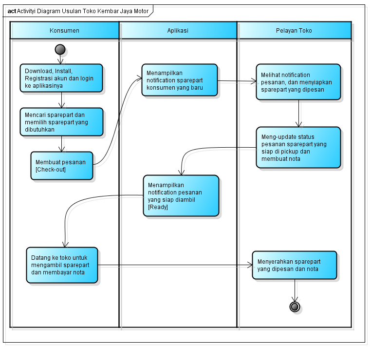

NIM : 1811500042
Nama : Arie Saputra
Kelompok: TI6A
Hasil saya menyadur di pertemuan 3 :
Pada pertemuan ke-3, mempelajari tentang analisa sistem usulan. sistem usulan tersebut ialah untuk memudahkan kedua belahpihak dalam memudahkan,menghemat biaya dan waktu dalam saat melakukan bisnis. activity diagram pada sistem usulan pun untuk menggambarkan suatu proses,
sedangkan untuk menggambar objek-objek yang berkaitan dengan proses berjalannya operasi diurutkan dari kiri ke kanan berdasarkan waktu terjadinya dalam pesan yang terurut, yaitu adalah sequence diagram.
Adapun studi kasus yang diberikan, berikut screenshoot tampilan activity diagram dan file latihan percobaan saya dalam membuat activity diagram :

Silahkan download file latihan activity diagram usulan yang saya kerjakan :
Download File Latihan